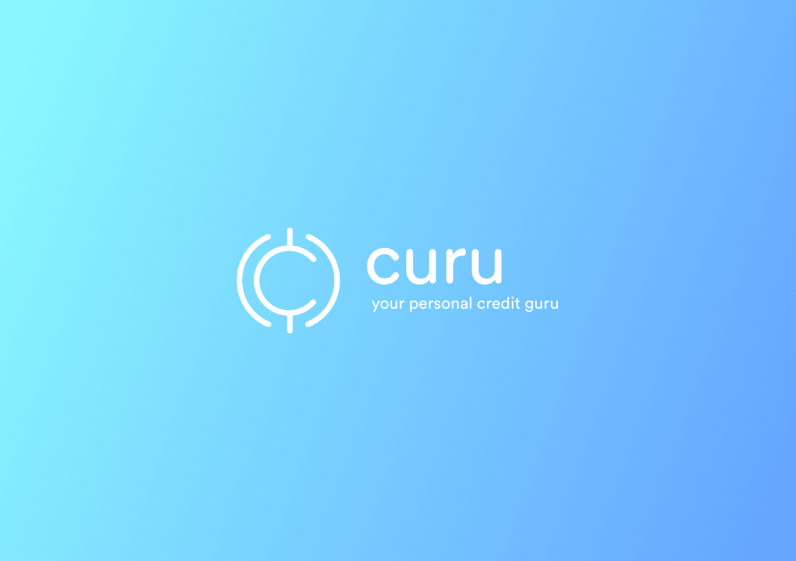
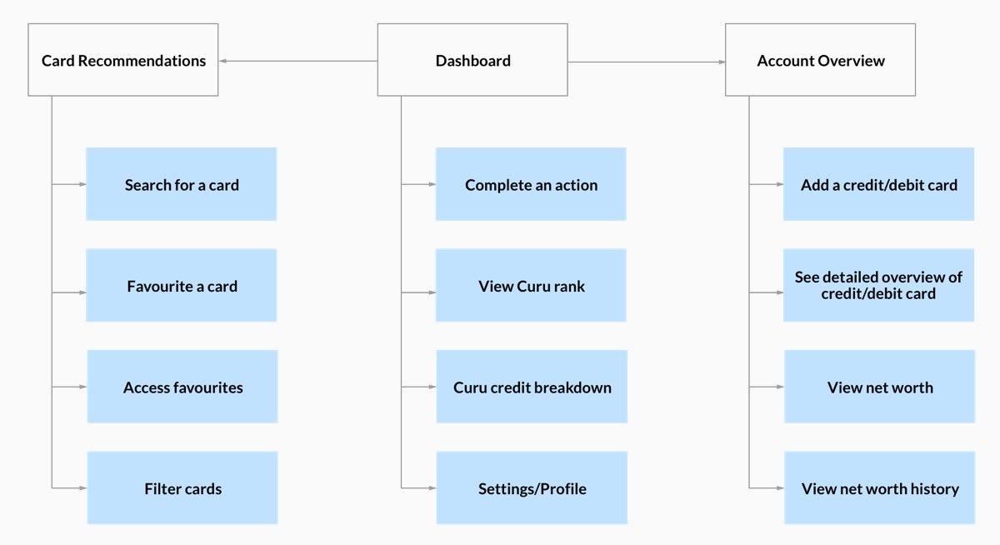
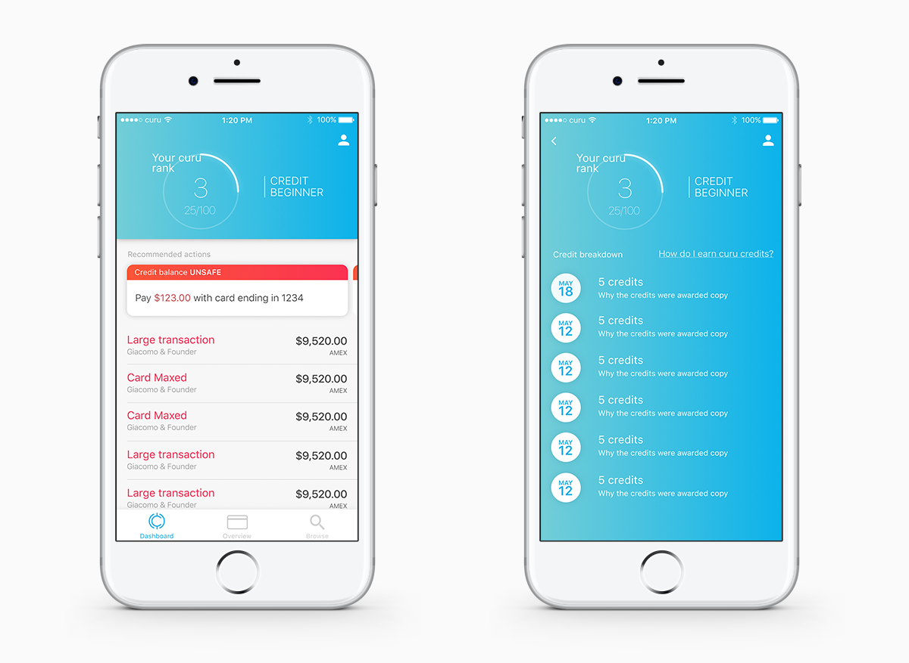
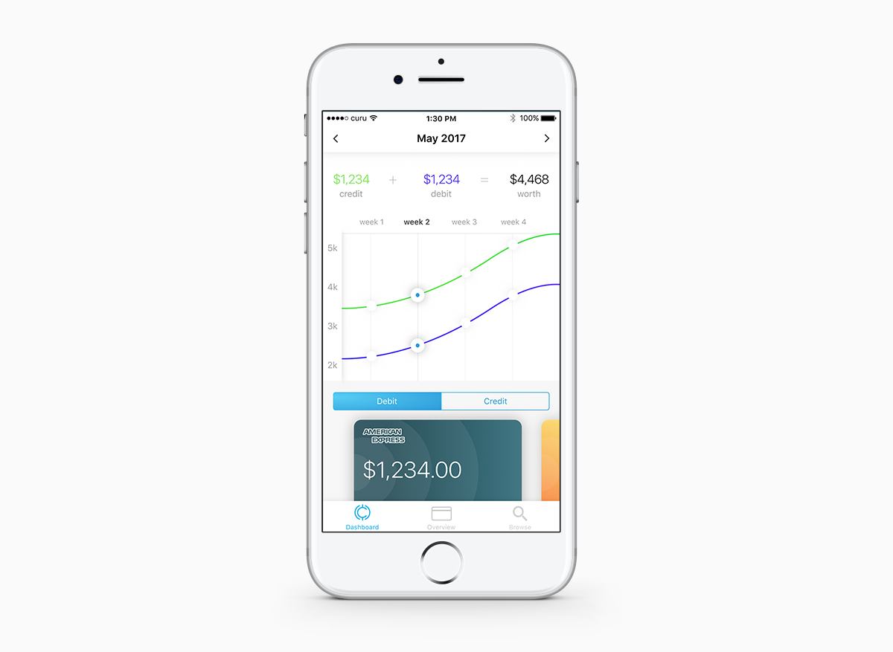
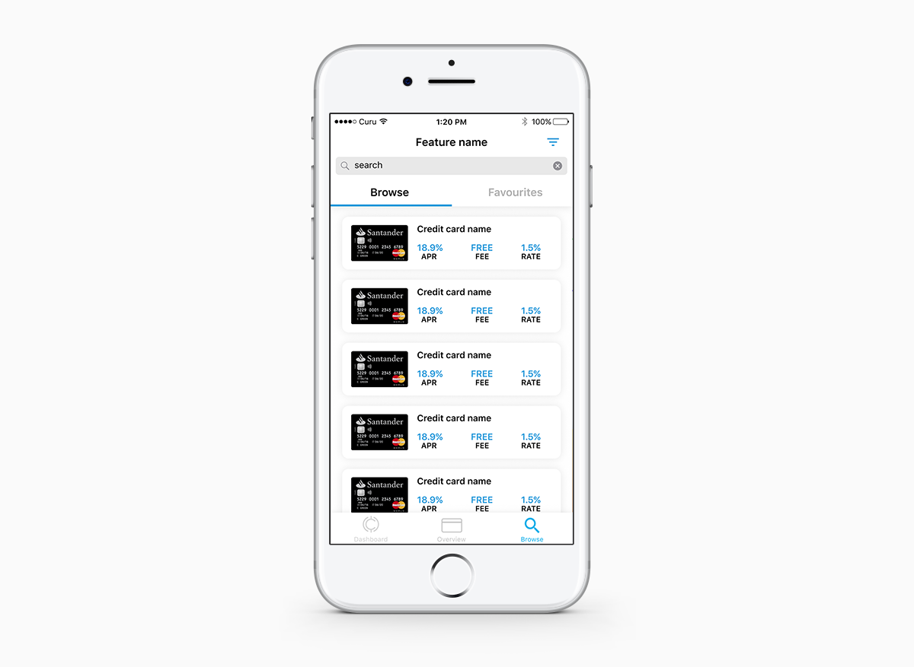

Curu
Working for a pre-seed startup
Background Information
WHAT IS CURU?
Curu is an early stage start-up company based in America. They want to build a product which helps American students understand and improve upon their credit score, while also making the process of managing money more fun and engaging.
I was contacted by Curu to design a brand identity and then take their app proposal and turn it into the design which will be used as the starting point for the product as well as for use in pitches to investors.
Creating a brand
Before working on the actual product, I needed to create brand. This brand would help form some of the underlying design decisions such as colour and copy. To help design the brand I worked with the CEO and CTO to help come up with some characteristics that should help define Curu. These characteristics would then be used to set goals for what the logo mark should look like. These goals were:
- Be friendly and approachable: money should not be something which is intimidating. Curu want to turn credit from a weapon that cripples and abuses individuals, to a system that empowers them.
- Be modern and cutting edge: technology associated with banking is often dated. Curu is on the cutting edge end of financial technology. Curu also primarily targeting millennials so therefore the company should be seen as modern.
- Be seen as safe and secure: money is a sensitive topic to a lot of people. If people are going to use Curu as a service they want be sure that the company they’re using is safe and secure.
The final logo I was happy with is based upon the US cent symbol and uses a customised type based of the typeface Circular. As I result of the considerations mentioned above I opted to go for a logo which used round curved edges as they were a lot more inviting and welcoming. After some discussions with the stakeholders we came to the conclusion that the the colour scheme for Curu should be a form of blue as this colour is strongly associated with finance. Below you can see the final outcome of the branding that I created:
The brand logo, wordmark and tagline.
Creating the Product
THE APP PROPOSAL
With the branding in place the next step was to go through the app proposal. In order to help get me familiar with the concept of the product and the teams vision I made the team create and present me a series of basic wireframes. This exercise allowed me to identify areas of the product which could be simplified to help create a better user experience.
The team had a lot of features they wanted to implement in the product and as a result the early concepts for the navigation involved a side bar with several points of navigation. After experimenting with this I was convinced the navigation could easily be simplified so I went away to construct the basic information hierarchy. I managed to simplify all the features of the product down into 3 fundamental areas.
Information hierarchy of some of Curu's key features
DASHBOARD
The dashboard is the homescreen of the app and provides the user with an overview of their score and shows actions that the user has taken and needs to take to improve upon it. The user can also access over areas of the app such as settings and tips on improving their score.
The screen on the left shows the intial dashboard. Tapping on your Curu rank takes you to a screen where it shows the history of your actions taken to get to that rank.
ACCOUNT OVERVIEW
The account overview shows the user their total networth as shows them a graph on how this has changed over time. Here the user can also access all their cards/accounts to get more specific information about each card/account.
The account overview screen
CARD RECOMMENDATIONS
To keep the product free Curu also needs to make revenue and one of the ways they plan on doing so is by having partnerships. Search recommends new credit and debit cards to users based on their actions. Users have the ability to then sign up for that card or favourite it so they can look at it later.
This is how the card recommendation screen looks
Conclsuion
This was a freelance project with a very tight turnaround. Everything had to be done and completed in around 3 weeks. I learnt a lot taking on this project, I think one of the most important things was collaboration and time management. As the sole designer I was constantly talking to the key stake holders about design decisions and potential directions to take the product. To me it was important to keep talking to the stakeholders to see if I’m creating or improving upon the original concept. I also had to manage my time effectively, working with a start-up which is pre-seed means the product is still constantly evolving and changing so I had to make sure I was moving at a fast pace. If given more time I would love to have conducted some user tests on areas such as the navigation to ensure that it was 100% the right direction to take. I would have also liked to have played around with different ways to implement the credit card recommendations/search feature so it is not so obtrusive.
TL;DR
I worked with early stage startup, Curu. As the first designer to collaborate with their team I had to create their brand identity and turn their app proposal into a design and prototype to be used for the development of the minimum viable product as well as for presentations to potential investors.